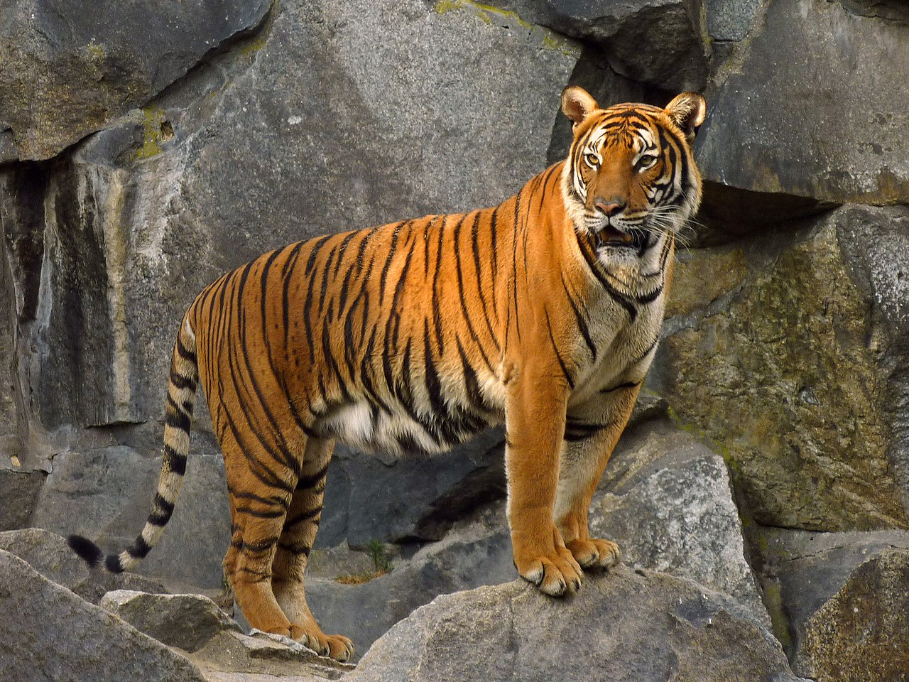

Lion
.jpg)
The lion (Panthera leo) is a large cat of the genus Panthera, currently ranging only in Sub-Saharan Africa and India. It has a muscular, broad-chested body; a short, rounded head; round ears; and a dark, hairy tuft at the tip of its tail. It is sexually dimorphic; adult male lions are larger than females and have a more prominent mane that usually obscures the ears and extends to the shoulders. lion is one of Africa's strongest predators and is often called the "King of Animals."
More info
Elephant

Elephants are the largest living land animals. Three living species are currently recognised: the African bush elephant (Loxodonta africana), the African forest elephant (L. cyclotis), and the Asian elephant (Elephas maximus). They are the only surviving members of the family Elephantidae and the order Proboscidea; extinct relatives include mammoths and mastodons. Distinctive features of elephants include a long proboscis called a trunk, tusks, large ear flaps, pillar-like legs, and tough but sensitive grey skin. The trunk is prehensile, bringing food and water to the mouth and grasping objects. Tusks, which are derived from the incisor teeth, serve both as weapons and as tools for moving objects and digging. The large ear flaps assist in maintaining a constant body temperature as well as in communication. African elephants have larger ears and concave backs, whereas Asian elephants have smaller ears and convex or level backs. elephant is the largest land animal currently living on Earth.
More info
Tiger
The tiger (Panthera tigris) is a large cat and a member of the genus Panthera native to Asia. It has a powerful, muscular body with a large head and paws, a long tail and orange fur with black, mostly vertical stripes. It is traditionally classified into nine recent subspecies, though some recognise only two subspecies, mainland Asian tigers and the island tigers of the Sunda Islands. tiger is a powerful predator known for its distinctive striped fur.
More info
Giraffe

The giraffe is a large African hoofed mammal belonging to the genus Giraffa. It is the tallest living terrestrial animal and the largest ruminant on Earth. It is classified under the family Giraffidae, along with its closest extant relative, the okapi. Traditionally, giraffes have been thought of as one species, Giraffa camelopardalis, with nine subspecies. Most recently, researchers proposed dividing them into four extant species, with seven subspecies, which can be distinguished morphologically by their fur coat patterns. Six valid extinct species of Giraffa are known from the fossil record. giraffe is the tallest animal in the world and can reach up to 6 meters in height.
More info
Panda

The giant panda (Ailuropoda melanoleuca), also known as the panda bear or simply panda, is a bear species endemic to China. It is characterised by its white coat with black patches around the eyes, ears, legs and shoulders. Its body is rotund; adult individuals weigh 100 to 115 kg (220 to 254 lb) and are typically 1.2 to 1.9 m (3 ft 11 in to 6 ft 3 in) long. It is sexually dimorphic, with males being typically 10 to 20% larger than females. A thumb is visible on its forepaw, which helps in holding bamboo in place for feeding. It has large molar teeth and expanded temporal fossa to meet its dietary requirements. It can digest starch and is mostly herbivorous with a diet consisting almost entirely of bamboo and bamboo shoots. panda is a peaceful animal that primarily feeds on bamboo and is a symbol of China.